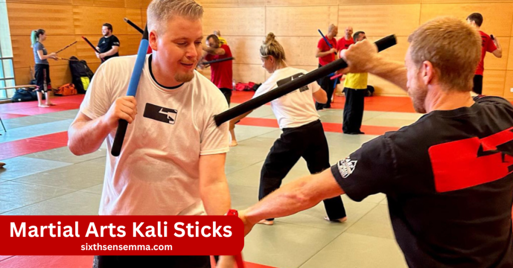
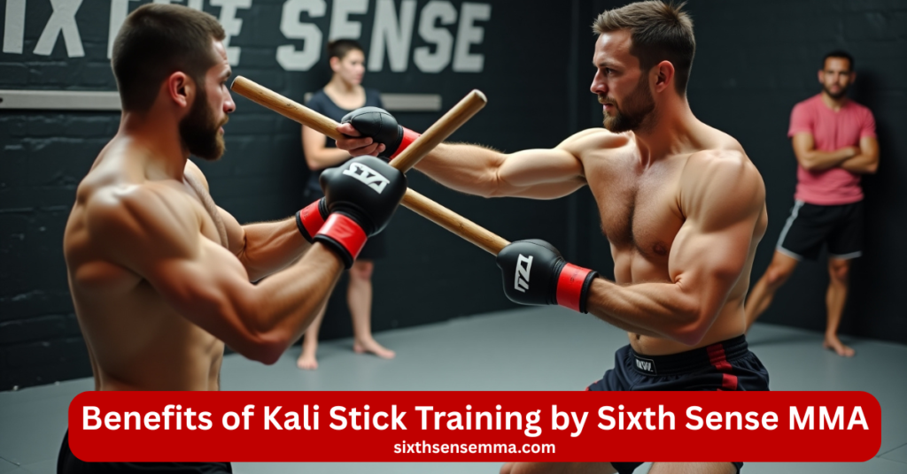
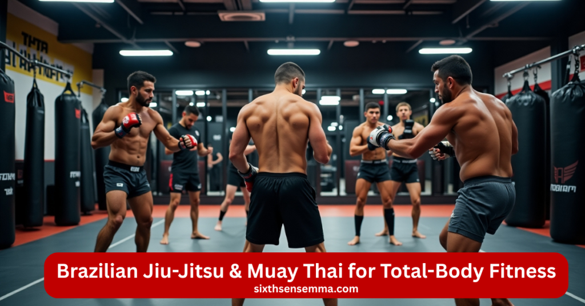

Master Martial Arts Kali Sticks Self-Defense, Speed & Control

Martial arts kali sticks are part of a powerful training style that comes from Filipino martial arts. They teach you how to move fast, stay in control, and protect yourself if needed. At Sixth Sense MMA, we use kali sticks to help you build real self-defense skills in a safe and respectful space. It’s great for beginners and advanced students alike.
Why Choose Sixth Sense MMA for Kali Stick Training
Sixth Sense MMA is the right place to learn Kali stick fighting because we focus on real skills, personal growth, and student safety. Our team is made up of experienced instructors who guide you step by step. The classes are well-organized, the environment is respectful, and safety is always taken seriously. Whether you’re new or experienced, you’ll feel supported and challenged in every class.
Certified and Experienced Kali Instructors
Our instructors are trained professionals with real experience in Kali stick techniques. They know how to teach students of all levels and explain every move in a clear way. You’ll be learning from people who have practiced this art for years and understand how to help others grow. They focus on correct form, discipline, and making sure you improve with each session.
Structured Class Curriculum for All Levels
We follow a clear training plan that helps you learn in the right order. Beginners start with basic strikes and movements, while advanced students work on more complex drills and sparring. Each class builds on the last, so you don’t get lost. This structure keeps you motivated and helps you move forward step by step, no matter where you start from.
Small Class Sizes for Personalized Attention
We keep our classes small so each student gets proper attention. In a smaller group, the instructor can focus on your progress and help you improve faster. You get more time to ask questions, fix mistakes, and build confidence. This makes training safer, more focused, and more enjoyable. Everyone gets noticed, and no one is left behind.
Clean, Modern Facility with a Respectful Culture
Our training center is clean, organized, and welcoming. We put a lot of effort into creating an atmosphere where everyone feels valued and inspired. There’s no ego or pressure just people learning together. From kids to adults, all students are treated with kindness and fairness. The space is designed to support focused training in a positive setting.
Safety-First Environment with Proper Gear and Protocols
Safety matters in every class. We use the right gear to protect students and follow rules that prevent injuries. Whether it’s drills, partner work, or sparring, instructors make sure everyone trains in control. New students are taught how to train safely, and experienced students are guided to lead by example. You can trust that your safety comes first here.

Benefits of Kali Stick Training by Sixth Sense MMA
Kali stick training offers more than just martial arts moves it builds real skills that help in and out of the gym. It’s a powerful way to improve both your mind and body. At Sixth Sense MMA, we focus on making every session useful, challenging, and enjoyable. Whether you’re training for self-defense, fitness, or personal growth, Kali gives you real, lasting benefits.
Boosts Coordination, Reflexes, and Reaction Time
Kali training helps your body react faster and more accurately. Through stick drills, your hands, eyes, and feet learn to work together. You start noticing how much better your balance, timing, and awareness become. Over time, your reaction speed improves in real-life situations, not just in training. It’s great for athletes, students, or anyone wanting to move with more control.
Trains Both Left and Right Hands Equally
One unique thing about Kali is that it makes both sides of your body stronger. You train with both hands, so your weaker side becomes just as skilled as your dominant side. This helps improve balance and gives you more options in self-defense. It also helps with brain function because you’re building new connections on both sides of your brain.
Builds Self-Defense Skills Against Real-World Weapon Attacks
Kali is not just about sticks it’s about real-world defense. You learn how to deal with threats like sticks, knives, or other weapons in practical ways. These techniques are used by law enforcement and military professionals around the world. At Sixth Sense MMA, we teach you how to stay calm and use smart movement to protect yourself if danger ever comes your way.
Sharpens Mental Focus, Timing, and Footwork
Each Kali drill requires full focus. You have to time your moves carefully and react to your partner or opponent. This makes your mind sharper and more alert. Your footwork also improves because you’re always moving with purpose. It’s a great way to train your brain and body at the same time, helping you stay sharp under pressure.
Fun, Challenging, and Fast-Paced Training
Kali training is exciting and never boring. The drills are quick, creative, and always changing. You learn to move fast and think faster, which keeps your mind engaged. Students often say it’s one of the most fun parts of their martial arts journey. You’ll sweat, smile, and grow every time you train and it pushes you in the best way.
Techniques You’ll Learn with Kali Sticks
In our Kali stick training at Sixth Sense MMA, you’ll learn a wide range of techniques that build real skill and confidence. Whether you’re just starting or already have martial arts experience, our classes guide you step by step. From the first basic strike to advanced sparring drills, we make sure you understand each move and practice it with control and focus.
Partner Flow Drills (Sinawali, Hubud Lubud)
You may improve your rhythm, timing, and coordination by practicing partner drills like hubud lubud and sinawali.. These flow patterns are done with a partner and allow you to practice attacking and defending at the same time. It’s a fun and fast way to sharpen your reflexes while learning how to read your partner’s movement. Over time, your hands begin to move with natural speed and control.
Solo Drills and Shadow Work
You don’t always need a partner to improve. Solo drills and shadow work give you the chance to repeat movements, sharpen your form, and build muscle memory on your own. We teach you how to train at home or at the gym by yourself, so you can keep progressing even outside class. These drills are perfect for staying consistent and focused.
Sparring and Controlled Contact for Advanced Students
Once you’ve learned the basics, you’ll move into light sparring and controlled contact. This allows you to apply what you’ve learned in a safe, supervised way. You get the chance to test your timing, reflexes, and awareness against a moving partner. It’s never about fighting hard it’s about learning to move smart, stay calm, and make fast, clear decisions.
Emphasis on Control, Safety, and Precision
Everything we teach in Kali is done with safety in mind. You’ll learn how to move with control and precision, not with force or aggression. This approach helps you stay safe while building real skill. We take the time to make sure every student understands the correct way to strike, block, and move. That way, you train smarter and better every time.
Martial Arts Programs by Age Group
| Age Group | Program Focus | Key Benefits |
|---|---|---|
| 4–7 Years | Kids Martial Arts (Basic Moves & Fun Drills) | Builds discipline, focus, confidence, and anti-bullying skills |
| 8–15 Years | Youth & Teen Martial Arts (BJJ, Muay Thai Basics) | Develops strength, goal-setting, fitness, and self-defense |
| 16+ Years | Adult Training (Kali, BJJ, Muay Thai) | Improves real-world defense, fitness, stress relief, and skill growth |
Who Should Train with Kali Sticks?
Kali stick training is for anyone who wants to improve their coordination, reflexes, and self-defense skills. It’s a practical and exciting martial art that blends traditional techniques with real-world use. Whether you’re just starting or already have experience in other fighting styles, Kali can add new value to your journey. All backgrounds and skill levels are welcome at Sixth Sense MMA.
Beginners Interested in Weapons-Based Martial Arts
If you’re new to martial arts but curious about training with weapons, Kali is a great starting point. It’s easy to begin, and we guide you step by step. You’ll learn basic strikes, movements, and drills without feeling overwhelmed. This is a hands-on way to build confidence, focus, and coordination, even if you’ve never done any martial arts before.
Experienced Fighters (BJJ, Muay Thai, etc.)
Kali stick training is a great addition for students who already practice Brazilian Jiu-Jitsu, Muay Thai, or other styles. It adds a new layer of skill weapon awareness, flow control, and improved reflexes. If you’re already confident in empty-hand combat, Kali helps you grow as a more complete martial artist. It teaches you how to react quickly and intelligently in close-range weapon situations.
Adults Seeking Fitness and Self-Defense
If you’re looking for a workout that’s both mentally and physically challenging, Kali is a great choice. It keeps you moving, sharpens your reflexes, and gives you real self-defense knowledge. You’ll sweat, think, and grow stronger with each class. It’s perfect for adults who want something more engaging than a regular gym session and something that prepares them for real-life threats.
Anyone Passionate About Traditional and Modern Martial Arts Fusion
Kali is deeply rooted in traditional Filipino martial arts, yet it fits perfectly into today’s world of self-defense and personal development. If you love learning about different styles and cultures, or enjoy martial arts for both the physical and mental challenge, Kali offers that unique blend. It’s fast, fluid, and full of history and perfect for anyone who wants a deep connection with their training.
Kali Stick Training Program What You Learn vs. What You Gain
| Training Focus | What You’ll Learn | What You’ll Gain |
|---|---|---|
| Fundamental Strikes (Angles 1–12) | Directional stick attacks using both hands | Faster reflexes, better hand-eye coordination |
| Blocking & Disarm Techniques | How to stop and redirect an incoming strike | Real-world weapon defense confidence |
| Partner Drills (Sinawali, Hubud) | Rhythmic patterns and reaction-based flow drills | Improved timing, fluid movement, and close-range control |
| Solo Stick & Shadow Training | Individual drills to build muscle memory | Sharper precision, balance, and solo focus |
| Controlled Sparring Practice | Light-contact drills to test techniques safely | Calm decision-making under pressure |
| Safety & Control Development | How to move with intent, awareness, and respect | Safer practice habits and long-term skill retention |
Adult Combat & Conditioning BJJ, Muay Thai & Real-World Self‑Defense
Our Adult Combat & Conditioning program is designed to challenge and transform your body and mind. Our lessons give you a solid foundation in technique and physical conditioning, whether your goal is fitness, self-defense, or competition. With expert coaching and a respectful atmosphere, you’ll learn skills that improve confidence, discipline, and total-body strength. This program is ideal for adults who want more than just a workout.

Brazilian Jiu-Jitsu & Muay Thai for Total-Body Fitness
| Martial Art | What You Learn | Key Fitness Benefits |
|---|---|---|
| Brazilian Jiu-Jitsu (BJJ) | Ground control, submissions, strategy | Core strength, balance, body awareness |
| Muay Thai | Striking, clinch work, timing | Cardio, endurance, speed, full-body power |
Core Strength, Agility, Focus, and Stress Relief in Every Session
Each class is designed to improve your body and clear your mind. BJJ and Muay Thai naturally strengthen your core and boost your flexibility. The movements challenge your coordination and balance, while the focus required helps reduce stress and sharpen your attention. Whether you’ve had a long day or need a mental reset, training helps you feel more grounded, alert, and energized.
Open Mat Days & Small Group Instruction for Fast Progression
We offer open mat sessions where you can practice techniques freely and test what you’ve learned. These sessions are great for reviewing moves, asking questions, or sparring at your own pace. Plus, our regular small group classes mean you won’t get lost in the crowd. Our coaches give personal feedback to help you improve faster and stay motivated throughout your journey.
Get in Touch with Sixth Sense MMA
Ready to begin your training in Kali sticks, Brazilian Jiu-Jitsu, or Muay Thai? Our team is here to guide you. Whether you have questions, want to book a free trial, or need help picking the right class, we’re just one message away.
Testimonials & Real Experiences
From Zero to Confident with Kali Training
— Ayaan Malik
I started Kali stick training without any martial arts background. The instructors made everything easy to understand, and now I feel sharper, faster, and much more confident in how I move.
A Respectful Place That Pushes You Forward
— Sarah K.
Sixth Sense MMA is the first place where I’ve felt truly supported. Every class is challenging, but the atmosphere is friendly and focused. I’ve seen major improvements in my strength and mindset.
Faster Reflexes, Better Control with Kali
— Junaid R.
Kali training has changed how I react, think, and move. The flow drills are fun and practical, and I’ve become quicker and more balanced not just in class but in everyday life too.
Training Together Made Us Both Stronger
— Aliya N.
I enrolled my son in the kids’ program, and seeing his progress made me join too. Now we both train regularly, and it’s helped us bond while building real martial arts skills.
Call to Action
Kali stick training is more than just learning how to use a weapon it helps you think faster, move better, and feel more prepared in real-life situations. At Sixth Sense MMA, we focus on helping every student grow at their own pace, with proper guidance and support. If you’re looking for a skill that improves your body and mind, Kali is a smart choice. Come join us and see the difference for yourself.
FAQ’s
Kali sticks are mainly used in Filipino martial arts, especially in Kali, Arnis, and Eskrima. These martial arts focus on stick fighting, knife defense, and empty-hand techniques. Students train using two sticks, learning strikes, blocks, and disarms that help build real-life self-defense skills with coordination and control.
Yes, Arnis is a very good martial art. It teaches practical self-defense using sticks, knives, and empty hands. It improves your reflexes, timing, and awareness. Arnis is also part of the official national sport of the Philippines, and it’s useful for both civilians and professionals like police and security.
Kali is highly effective for real-world self-defense. It focuses on weapons training, especially sticks and knives, and teaches how to respond quickly under pressure. Kali also builds strong reflexes, footwork, and awareness. Many law enforcement and military personnel use Kali techniques in close-combat situations.
The two sticks used in martial arts like Kali, Arnis, and Eskrima are often called rattan sticks or Kali sticks. They are lightweight, durable, and safe for training. Practitioners use them for learning angles of attack, defense techniques, and sparring drills with control and speed.
Yes, Kali can be a great addition to MMA training. While it’s weapon-based, Kali improves timing, coordination, distance control, and reaction speed. It helps MMA fighters become more aware in close-quarters combat and teaches quick thinking, which is useful even without weapons in a cage fight.
Kali sticks are usually about 26 to 28 inches long and made from rattan. This length allows for good control and reach while still being safe for training. Some beginners may start with shorter sticks for easier handling, but standard size is best for learning proper technique.
Martial arts like Brazilian Jiu-Jitsu, Muay Thai, and Krav Maga are known to be tough to fight against because they focus on real situations. The “hardest” depends on the person and the context. Arts with both striking and grappling like MMA can also be very difficult to handle.
Many martial arts can be safe when taught properly. Tai Chi is gentle and low-impact, good for all ages. Brazilian Jiu-Jitsu is also safe because it focuses on control and submissions without strikes. Safety depends on good instruction, proper gear, and respect during training.
Train with us in Coppell
The first class is free. Shorts, a t-shirt and a water bottle. We lend the rest.
Book a free class